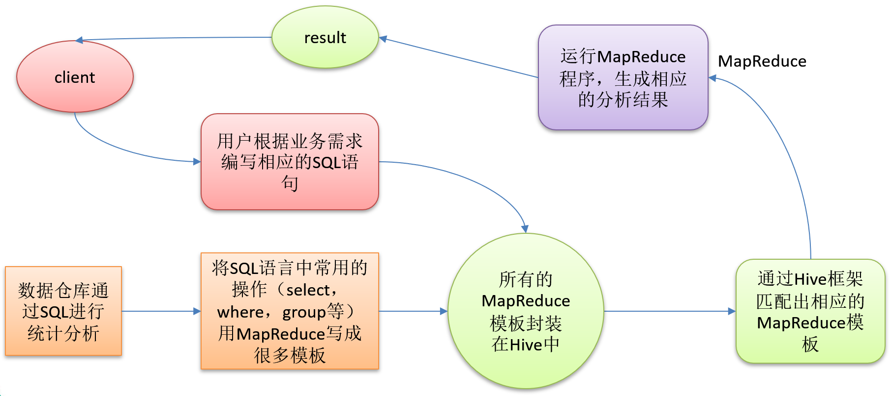
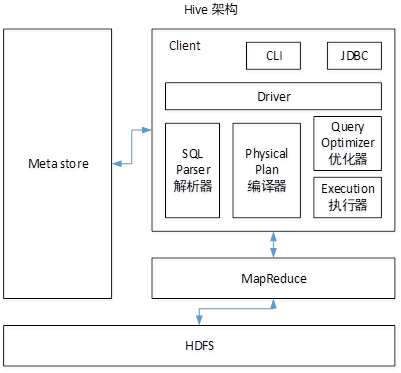

Hive
由于种种原因，已经好久没有更大数据相关博客了，经过一些观察之后，发现现在大数据很多都是数仓方向的（可能是部分公司的原因），感觉还是着手下 hive 的学习吧。
希望以后不会失业，555555
Hive入门
什么是Hive
Hive：由Facebook开源用于解决海量结构化日志的数据统计。
Hive是基于Hadoop的一个数据仓库工具，可以将结构化的数据文件映射为一张表，并提供类SQL查询功能。
本质是：将HQL转化成MapReduce程序

1）Hive处理的数据存储在HDFS
2）Hive分析数据底层的实现是MapReduce
3）执行程序运行在Yarn上
Hive的优缺点
优点
1) 操作接口采用类SQL语法，提供快速开发的能力（简单、容易上手）。
2) 避免了去写MapReduce，减少开发人员的学习成本。
3) Hive的执行延迟比较高，因此Hive常用于数据分析，对实时性要求不高的场合。
4) Hive优势在于处理大数据，对于处理小数据没有优势，因为Hive的执行延迟比较高。
5) Hive支持用户自定义函数，用户可以根据自己的需求来实现自己的函数。
缺点
1．Hive的HQL表达能力有限
（1）迭代式算法无法表达（此处说hive不删除就是相当于说mr不擅长）
迭代处理就是不断对分析结果进行处理，算法分好多步，每一步需要上一步的计算结果，在 mr 中输出必须经过 IO，很慢，而且 sql 无法实现计算之后再计算
（2）数据挖掘方面不擅长
2．Hive的效率比较低
（1）Hive自动生成的MapReduce作业，通常情况下不够智能化
（2）Hive调优比较困难，粒度较粗
Hive架构原理

1．用户接口：Client
CLI（hive shell）、JDBC/ODBC(java访问hive)、WEBUI（浏览器访问hive）
2．元数据：Metastore
元数据包括：表名、表所属的数据库（默认是default）、表的拥有者、列/分区字段、表的类型（是否是外部表）、表的数据所在目录等；
默认存储在自带的derby数据库中，推荐使用MySQL存储Metastore
3．Hadoop
使用HDFS进行存储，使用MapReduce进行计算。
4．驱动器：Driver
（1）解析器（SQL Parser）：将SQL字符串转换成抽象语法树AST，这一步一般都用第三方工具库完成，比如antlr；对AST进行语法分析，比如表是否存在、字段是否存在、SQL语义是否有误。
（2）编译器（Physical Plan）：将AST编译生成逻辑执行计划（将 hql 翻译成 mr）。
（3）优化器（Query Optimizer）：对逻辑执行计划进行优化。
（4）执行器（Execution）：把逻辑执行计划转换成可以运行的物理计划。对于Hive来说，就是MR/Spark。
Hive通过给用户提供的一系列交互接口，接收到用户的指令(SQL)，使用自己的Driver，结合元数据(MetaStore)，将这些指令翻译成MapReduce，提交到Hadoop中执行，最后，将执行返回的结果输出到用户交互接口。
Hive和数据库比较
由于 Hive 采用了类似SQL 的查询语言 HQL(Hive Query Language)，因此很容易将 Hive 理解为数据库。其实从结构上来看，Hive 和数据库除了拥有类似的查询语言，再无类似之处。本文将从多个方面来阐述 Hive 和数据库的差异。数据库可以用在 Online 的应用中，但是 Hive 是为数据仓库而设计的，清楚这一点，有助于从应用角度理解 Hive 的特性。
查询语言
由于SQL被广泛的应用在数据仓库中，因此，专门针对Hive的特性设计了类SQL的查询语言HQL。熟悉SQL开发的开发者可以很方便的使用Hive进行开发。
数据存储位置
Hive 是建立在 Hadoop 之上的，所有 Hive 的数据都是存储在 HDFS 中的。而数据库则可以将数据保存在块设备或者本地文件系统中。
数据更新
由于Hive是针对数据仓库应用设计的，而数据仓库的内容是读多写少的。因此，Hive中不建议对数据的改写，所有的数据都是在加载的时候确定好的。而数据库中的数据通常是需要经常进行修改的，因此可以使用 INSERT INTO … VALUES 添加数据，使用 UPDATE … SET 修改数据。
索引
Hive 在加载数据的过程中不会对数据进行任何处理，甚至不会对数据进行扫描，因此也没有对数据中的某些Key建立索引。Hive要访问数据中满足条件的特定值时，需要暴力扫描整个数据，因此访问延迟较高。由于 MapReduce 的引入， Hive 可以并行访问数据，因此即使没有索引，对于大数据量的访问，Hive 仍然可以体现出优势。数据库中，通常会针对一个或者几个列建立索引，因此对于少量的特定条件的数据的访问，数据库可以有很高的效率，较低的延迟。由于数据的访问延迟较高，决定了 Hive 不适合在线数据查询。
执行
Hive中大多数查询的执行是通过 Hadoop 提供的 MapReduce 来实现的。而数据库通常有自己的执行引擎。
执行延迟
Hive 在查询数据的时候，由于没有索引，需要扫描整个表，因此延迟较高。另外一个导致 Hive 执行延迟高的因素是 MapReduce 框架。由于 MapReduce 本身具有较高的延迟，因此在利用 MapReduce 执行 Hive 查询时，也会有较高的延迟。相对的，数据库的执行延迟较低。当然，这个低是有条件的，即数据规模较小，当数据规模大到超过数据库的处理能力（百万级）的时候，Hive的并行计算显然能体现出优势。
可扩展性
由于Hive是建立在Hadoop之上的，因此Hive的可扩展性是和Hadoop的可扩展性是一致的（世界上最大的 Hadoop 集群在 Yahoo!，2009年的规模在4000台节点左右）。而数据库由于 ACID 语义的严格限制，扩展行非常有限。目前最先进的并行数据库 Oracle 在理论上的扩展能力也只有100台左右。
数据规模
由于Hive建立在集群上并可以利用MapReduce进行并行计算，因此可以支持很大规模的数据；对应的，数据库可以支持的数据规模较小。
Hive安装
Hive安装地址
1．Hive官网地址
2．文档查看地址
https://cwiki.apache.org/confluence/display/Hive/GettingStarted
3．下载地址
http://archive.apache.org/dist/hive/
4．github地址